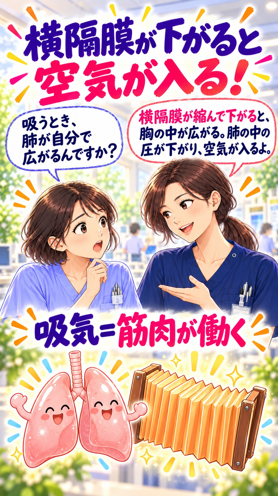

1. 呼吸は ２つの仕事！
後輩：息をするって、空気を出し入れすることですか？
先輩：空気を動かす換気と、酸素・二酸化炭素を交換するガス交換。両方が大切だよ。
空気を動かす・ガスを交換する。先輩と後輩の会話で、呼吸のしくみをひとつずつ。
画面の真ん中を押すと、音声付き動画が再生します。
動画ファイルを開く| ガス | 移動の向き |
|---|---|
| 酸素（O₂） | 肺胞 → 血液 |
| 二酸化炭素（CO₂） | 血液 → 肺胞 |
風船・蛇腹・荷物運びは、理解のための比喩です。イラストの形や配置は実際の解剖構造を示していません。ガスの移動は、各ガスの分圧差による拡散です。酸素と二酸化炭素を一対一で受け渡す取引ではありません。
吸気では横隔膜が収縮して下がり、胸腔が広がります。肺が広がることで肺胞内の圧が外気より低くなり、気道を通って空気が入ります。空気が胸腔そのものに入るわけではありません。外肋間筋なども吸気に関わります。
安静時の呼気は主に受動的です。吸気筋がゆるみ、肺・胸郭の弾性による戻る力で肺胞内の圧が外気より高くなり、空気が出ます。運動時や努力して吐くとき、病状によっては呼気にも筋肉の働きが加わります。
換気は空気の出入りです。そのうち肺胞に届く換気が、ガス交換と二酸化炭素の排出に関わります。肺胞と毛細血管の薄い壁を通るガス交換には、肺胞への空気と、肺の毛細血管を流れる血液の両方が必要です。どちらかが不足したり、釣り合いが崩れたりすると、十分に酸素を取り込めないことがあります。
外呼吸は肺胞と血液のガス交換、内呼吸は血液と体の組織のガス交換を指します。細胞が酸素を使ってエネルギーを得る過程は細胞呼吸です。内呼吸と細胞呼吸は区別して理解しましょう。
酸素は主に赤血球のヘモグロビンと結合して運ばれ、一部は血漿に溶けています。二酸化炭素は主に重炭酸イオンの形で運ばれます。酸素と二酸化炭素の運び方は同じではありません。
酸素解離曲線は、酸素分圧とヘモグロビンの酸素飽和度の関係を示すS字状の曲線です。肺で酸素を受け取り、組織で放すしくみを理解する手がかりになります。二酸化炭素の増加、pHの低下、温度の上昇などでは右に移動し、同じ酸素分圧で酸素を放しやすくなります。
SpO₂は、パルスオキシメータで推定する動脈血の酸素飽和度です。酸素化の目安になりますが、二酸化炭素の量は測定しません。酸素の値が保たれていても、換気が十分とは限りません。二酸化炭素の評価には、必要に応じて血液ガスなどを用います。
呼吸数だけでなく、深さ、努力呼吸、息苦しさ、意識状態、経過を合わせて観察します。体動や末梢の冷えなどで測定値に誤差が出ることもあります。急な呼吸困難や意識の変化は、数値だけで安心せず、速やかに指導者・担当者へ報告して評価につなげます。
制作時照合日：2026年10月1日（日本時間）。
後輩：息をするって、空気を出し入れすることですか？
先輩：空気を動かす換気と、酸素・二酸化炭素を交換するガス交換。両方が大切だよ。

後輩：吸うとき、肺が自分で広がるんですか？
先輩：横隔膜が縮んで下がると、胸の中が広がる。肺の中の圧が下がり、空気が入るよ。
後輩：吐くときも、筋肉で押し出すんですか？
先輩：安静時は、筋肉がゆるむと肺が元に戻る。その力で空気が出るよ。
後輩：吸った酸素は、どこで血液に入るんですか？
先輩：肺胞の薄い壁を通って血液へ。二酸化炭素は血液から肺胞へ移るよ。
後輩：酸素は、どうやって全身へ届くんですか？
先輩：主に赤血球のヘモグロビンが運ぶよ。体で生まれた二酸化炭素は、血液で肺へ戻るんだ。
後輩：空気が肺に入れば、酸素は十分ですか？
先輩：肺胞へ空気が届く換気と、血液が流れる血流。両方がそろって酸素を渡せるよ。
後輩：ヘモグロビンは、酸素をずっと抱えているんですか？
先輩：肺で受け取り、組織で放すよ。その結びつきやすさを示すのが、酸素解離曲線なんだ。
後輩：SpO₂が正常なら、呼吸は大丈夫ですか？
先輩：酸素化の目安だよ。二酸化炭素の排出は別。呼吸の深さ、苦しさ、意識も見よう。
後輩：フォローしていただけると励みになります。よろしくお願いします。